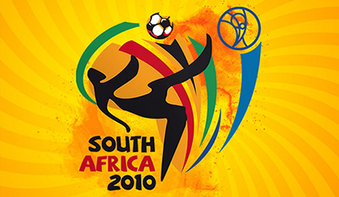

La Copa Mundial de la FIFA Sudáfrica 2010 (en inglés: 2010 FIFA World Cup; en afrikáans: FIFA Sokker-Wêreldbekertoernooi in 2010) fue la decimonovena edición de la Copa Mundial de Fútbol. La competición se celebró en Sudáfrica, entre el 11 de junio y el 11 de julio de ese año. Fue la primera vez que el torneo se disputaba en África y la quinta que lo hacía en el hemisferio sur. El país anfitrión superó en la elección previa a Egipto y Marruecos.
Se inscribieron para participar en el proceso de clasificación 204 de las 208 asociaciones nacionales adheridas a la FIFA, realizado entre mediados de 2007 y fines de 2009, para poder determinar a los 31 equipos participantes en la fase final del torneo (que se unieron al anfitrión, Sudáfrica). Se superó la marca de 197 participantes del torneo anterior.
El campeonato estuvo compuesto de dos fases: en la primera, se conformaron ocho grupos de cuatro equipos cada uno y avanzaron a la siguiente ronda los dos mejores de cada grupo. Los dieciséis clasificados se enfrentaron posteriormente en partidos eliminatorios, hasta llegar a los dos equipos que disputaron la final en el estadio Soccer City de Johannesburgo.
Tras la consagración de España ante los Países Bajos, este Mundial fue el primero jugado fuera de Europa en el que se proclamó campeón un equipo de dicho continente. Además, fue la primera vez desde 1998 en que ganó un equipo sin copas mundiales anteriores en su palmarés y la primera vez desde 1978 en que dos equipos sin copas mundiales se enfrentaron en la final. También fue la primera vez desde 1962 en que sEuropa y Sudamérica no se alternan el campeón mundial, ya que en la edición anterior el campeón también fue europeo (Italia). Como campeones del mundo, España participó en la Copa FIFA Confederaciones 2013.